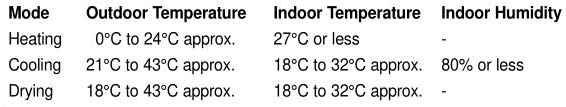
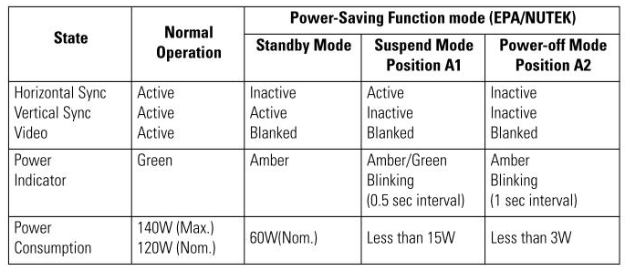
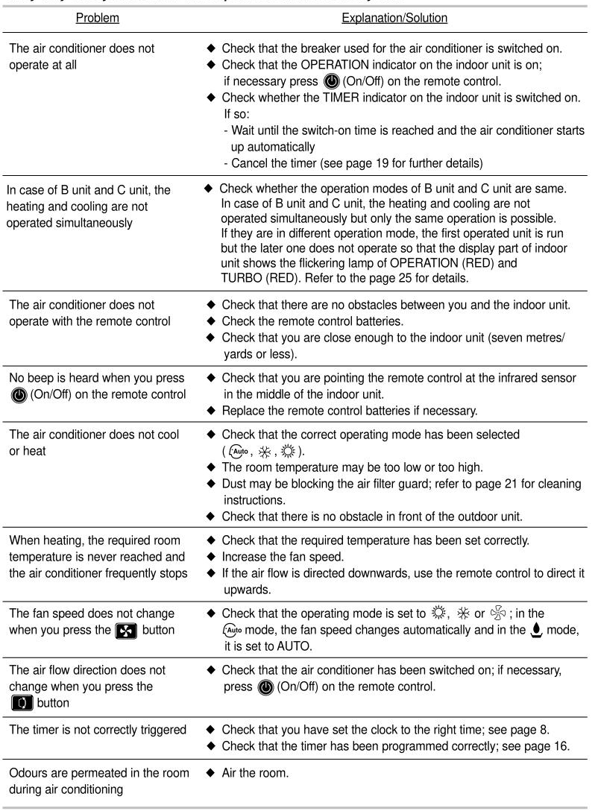

표 3개 샘플. 왼쪽은 기존 shape로 자른 원본, 오른쪽은 파이프라인이 반환한 HTML입니다. HTML 저장 성공은 인식 정확도를 뜻하지 않습니다. 표시용 테두리만 추가했으며 HTML 파일과 table_content는 반환 문자열 그대로입니다.
셀·병합·보존 검증 · 처리 시간·GPU 기록 · Table 샘플 · 페이지 보존 샘플
4행×4열 구조와 숫자값은 보존됐지만 온도 단위 표기 4개 셀에 오류가 있고, Heating 행의 습도 '-'가 빠졌습니다. 공백·유니코드 호환 문자를 정규화한 셀 일치는 11/16입니다.
samsung_air conditioner manuals_55f1cc77-90bf-4444-8352-3f821c2a5233_436

| Mode | Outdoor Temperature | Indoor Temperature | Indoor Humidity |
| Heating | 0℃ to 24℃ approx. | 27°℃or less | |
| Cooling | 21℃C to 43℃C approx. | 18°C to 32℃ approx. | 80% or less |
| Drying | 18°℃ to 43C approx. | 18℃ to 32°℃ approx. | - |
5행×5열의 구조, State·Normal Operation의 rowspan=2, 전력 절약 헤더의 colspan=3이 모두 맞았습니다. 21개 셀 중 20개가 정규화 후 일치합니다. Standby Mode의 Inactive가 소문자 l로 시작하는 lnactive로 인식됐습니다.
samsung_computer monitor manuals_792b95a1-c245-83b4-e1e8-9f1b216094bd_380

| State | Normal Operation | Power-Saving Function mode (EPA/NUTEK) | ||
| Standby Mode | Suspend Mode Position A1 | Power-off Mode Position A2 | ||
| Horizontal Sync Vertical Sync Video | Active Active Active | lnactive Active Blanked | Active Inactive Blanked | Inactive Inactive Blanked |
| Power Indicator | Green | Amber | Amber/Green Blinking (0.5 sec interval) | Amber Blinking (1 sec interval) |
| Power Consumption | 140W (Max.) 120W (Nom.) | 60W(Nom.) | Less than 15W | Less than 3W |
11행×2열과 10개 문제-해결 대응, 마지막 Air the room.까지 보존됐습니다. 페이지 번호 19·25·21·8·16과 seven metres/yards or less는 해당 행에 남아 있습니다. 전원·팬·풍향·운전 모드 아이콘은 누락되거나 X·쉼표 등으로 바뀌어 버튼·모드 안내의 의미가 일부 손실됐습니다.
samsung_air conditioner manuals_55f1cc77-90bf-4444-8352-3f821c2a5233_617

| Problem | Explanation/Solution |
| The air conditioner does not operate at all | Check that the breaker used for the air conditioner is switched on. Check that the OPERATIONindicator on the indoor unit is on; if necessary press (On/Off)on the remote control. Check whether the TIMER indicator on the indoor unit is switchedon. lf so: -Waituntil the switch-on time is reached and the air conditioner starts up automatically -Cancel the timer (see page 19 for further details) |
| In case of B unit and C unit,the heating and cooling are not operated simultaneously | Check whether the operation modes of B unit and C unit are same. In case of B unit andC unit,the heating and cooling are not operated simultaneously but only the same operation is possible If they are in different operationmode,the first operated unit isrun but the later one does notoperate so that the display part of indoor unit shows the flickering lamp of OPERATION (RED) and TURBO(RED).Refer to the page 25for details. |
| The air conditioner does not operate with the remote control | Check that there are no obstacles between you and the indoor unit Check the remote control batteries. Check that you are close enough to the indoor unit (seven metres/ yards or less). |
| No beep is heard when you press (On/Off)on the remote control | Check that you are pointing the remote control at the infrared sensor in the middle of the indoor unit Replace the remote control batteries if necessary. |
| The air conditioner does not cool or heat | Check that the correct operating mode has been selected (Auto，，). The room temperature may be too low or too high. Dust may be blocking the airfilter guard;refer to page21 for cleaning instructions. Check that there is no obstacle in front of the outdoor unit |
| When heating,the required room temperature is never reached and the air conditioner frequently stops | Check that the required temperature has been set correctly. Increase the fan speed. If the air flow is directed downwards,use the remote control to direct it upwards. |
| The fan speed does not change when you press the X button | Check that the operating mode is set to,or;in the Auto mode,the fan speed changes automatically and in themode itis set to AUTO |
| The air flow direction does not change when you press the button | Check that the air conditioner has been switched on;if necessary, press (On/Off) on the remote control. |
| The timer is not correctly triggered | Check that you have set the clock to the right time; see page 8 Check that the timer has been programmedcorrectly; see page16. |
| Odours are permeated in the room during air conditioning | Air the room. |
PaddleOCR 3.3.2 / PaddleX 3.3.11 / 공식 Windows RTX 50용 PaddlePaddle GPU 3.0.0.dev20250717, CUDA 12.9, cuDNN 9.9. OCR: PP-OCRv5_server_det + PP-OCRv5_server_rec. 표 분류: PP-LCNet_x1_0_table_cls. 구조: SLANeXt_wired / SLANeXt_wireless. 셀 검출: RT-DETR-L_wired_table_cell_det / RT-DETR-L_wireless_table_cell_det.
gpu:0, 표 한 개씩·OCR 배치 1, 검출 긴 변 최대 1280, 레이아웃 검출·문서/표/텍스트 방향 분류·왜곡 보정 끄기, TensorRT/HPI 끄기. Paddle auto_growth 할당 한도 6144MiB. 관측 장치 전체 VRAM 최대 2810MiB, 온도 60°C. 종료 후 VRAM 0MiB. 모델 준비 약 200초는 표별 처리 시간에서 제외했습니다.
원본과 그림 보강본 train/val/test 6개 파일의 SHA-256이 전후 일치합니다. 그림 description 23,807개와 기존 ID·좌표·본문·QA를 유지했습니다. 별도 페이지 샘플에서는 세 Table에 table_content만 추가했습니다. 모델에는 이미지 배열만 전달했습니다.
초기 한글 모델 경로 로딩 오류는 %LOCALAPPDATA%/PM209-PaddleTables/paddlex 영문 캐시로 해결했습니다. 표 추론 오류는 0건입니다. 세 표 모두 마지막 행까지 확인했고 끝부분 잘림은 관찰되지 않았습니다. HTML은 반환 문자열 그대로이며 오류를 수정하거나 Qwen으로 다시 작성하지 않았습니다.
행별 수동 검수와 실행 명령 · 실행 설정 · 전체 파이프라인 설정 · GPU 환경 · 설치 패키지 잠금 목록
.runtime\venv-paddle-tables\Scripts\python.exe -X utf8 -u -B PM209/scripts/run_paddle_table_sample.py .runtime\venv-paddle-tables\Scripts\python.exe -X utf8 -B PM209/scripts/review_paddle_table_sample.py
기존 HTML이 있으면 추출 실행기는 덮어쓰기를 거부합니다. 전체 표 처리는 실행하지 않았습니다.